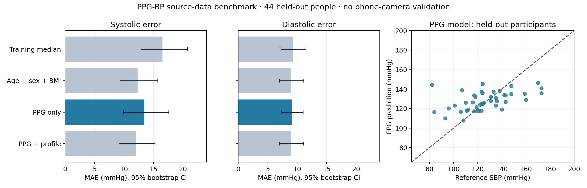

Back to scanPUBLIC-DATA SPRINT · 3 OCT 2026
A trained baseline.
Phone accuracy is still unknown.
217 participants and 645 unique clips after data cleaning. Model selected on a separate validation group, then fitted on 173 participants and tested on 44 unseen people.
The source-test model overestimates low systolic BP and underestimates high systolic BP. Do not use its outputs for health decisions.
Held-out source-data error
| Inputs | SBP MAE | DBP MAE |
|---|
| Training median | 16.55 | 9.27 |
| Age + sex + BMI | 12.28 | 8.96 |
| PPG only | 13.45 | 9.12 |
| PPG + profile | 12.04 | 8.93 |
mmHg; average prediction from 2–3 short clips per person. These scores are not phone-camera validation.

What the signal adds
Adding PPG to age, sex and BMI reduced error by only 0.25 / 0.03 mmHg. Both confidence intervals include zero. The experiment does not establish added value beyond demographics.
Data integrity
The original release contains 219 participants and 657 infrared-probe clips. Seven exact duplicate pairs were found. Two participants with a shared waveform under different IDs were excluded, six within-person repeats were collapsed, and two longer files were restricted to their first 2.1 seconds. Cleaning occurred before partitioning.
What is running
The app uses a 200-tree signal-only random forest. It extracts 25 features from each 2.1-second window using the same preprocessing as training. Actual frame timestamps and separate RGB traces replace the old intensity-based demo formula. No EMR fields or cuff readings enter this model.
Engineering checks can reject unusable captures, but passing them does not establish BP accuracy. A phone capture remains an extrapolation from infrared probe signals. Reference pairing is available for export; automatic personalization is deferred until repeated paired data exist.
Quality-driven capture report
The app has no fixed scan-time limit. It retains clean, nonoverlapping 6.3-second PPG snippets and automatically reports after at least 12 accepted complete beat intervals, 2 BP-eligible snippets, stable waveform morphology, and readiness of every loaded model. Each BP snippet preserves three original 2.1-second model windows. Rejected frames and gaps are not joined; accepted recent snippets survive interruptions in separate compatible groups; BP snippets expire after 60 seconds and RGB after 120 seconds.
Mean pulse is 60 divided by the mean accepted interval duration. A phase-aligned, normalized mean waveform is displayed separately and is never substituted for the model input. When pulse is ready but BP checks fail, scanning continues with an optional pulse-only report. These are provisional acquisition criteria, not evidence of accurate phone BP or pulse. Model weights and the source-data benchmark above are unchanged.
Before KKH model adaptation
Lock the recording and cuff-reference procedure. Test this frozen model on the first paired KKH phone recordings, then adapt using only the local development cohort. Keep independent participants, phone types and later visits for validation.
Download full sprint report · Download metrics · Download fitted model · Download held-out predictions
Source: PPG-BP v5, CC0 · Dataset paper